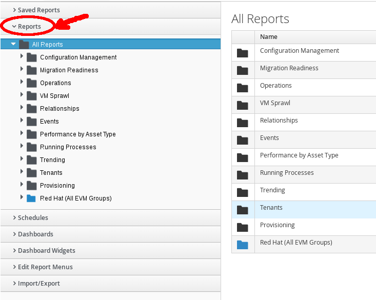

Exercise 1.4 - Explore Reports
Exercise Description
In this exercise, you will learn how to view, search and customize reports.
In Red Hat CloudForms, reports have been constructed to help you view the most commonly requested and significant data. With appropriate access credentials, you can also create reports. CloudForms Management Engine provides a large group of default reports, organized into categories. Each category has a set of subfolders.
Section 1: Explore Reports
Step 1: Select Cloud Intel → Reports.

Navigate Reports
The Saved Reports accordion contains previously generated reports.
Saved Reports Accordion
Step 2: Scroll through the Saved Reports and select VM Performance.

Saved Reports VM Performance
Step 3: Select the previously generated report under it and observe that the report’s output is on the right.
Step 4: To download the report, click (Download).

Saved Reports VM Performance Download
Step 5: Explore the other reports.
Section 2: View Customization Options
The Reports accordion lists reports you can run on demand or by scheduling.
Step 1: Click the Reports accordion.

Reports Accordion
Step 2: Scroll down and select My Company…, then click the light blue Custom folder.
My Company Custom Reports